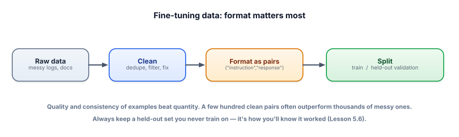

Data preparation
If fine-tuning fails, it’s almost always the data — not the algorithm. The dataset is the product of a fine-tune: the model becomes a mirror of the examples you show it. This lesson is how to build that mirror well.
Why data is the whole game
Training nudges the model toward your examples (Lesson 5.2), so whatever patterns live in your data get baked in — including the bad ones. Inconsistent formats teach inconsistency; a biased mix teaches bias; sloppy answers teach sloppiness. The hard, valuable work of fine-tuning is assembling a clean, consistent, representative set of examples in the exact shape you want the model to produce. Get this right and a simple LoRA run succeeds; get it wrong and no hyperparameter will save you.

A fine-tuning training example is an input paired with the desired output — for instruction tuning, an instruction → response pair, often expressed in a chat format (a list of role/content messages). You split your examples into a training set the model learns from and a validation set held out to measure honestly. The cardinal rule: the data’s format must match how you’ll prompt the model at inference.
The quality checklist
- Consistent format. Every example in the same shape — the model copies the pattern, including inconsistencies.
- High-quality outputs. The responses are exactly what you want produced. The model imitates them faithfully, warts and all.
- Representative & diverse. Cover the real range of inputs, including edge cases, not 500 near-duplicates.
- Deduplicated & clean. Remove duplicates, junk, and contradictions; they confuse training and inflate apparent performance.
- No train/validation leakage. The same (or near-identical) example must not appear in both, or your evaluation lies to you.
- Quality over quantity. A few hundred excellent, consistent pairs routinely beat thousands of mediocre ones.
The common modern format is a list of chat messages per example, saved as JSONL (one JSON object per line). This is just data wrangling — free, no GPU.
import json, random
# raw pairs you collected/curated
raw = [
{"q": "How do I reset my password?", "a": "Go to Settings > Security > Reset password."},
{"q": "What's your refund window?", "a": "Returns are free within 30 days of delivery."},
# ... a few hundred clean, consistent examples ...
]
SYSTEM = "You are Acme's support assistant. Be concise and accurate."
def to_example(row): # SAME shape you'll use at inference
return {"messages": [
{"role": "system", "content": SYSTEM},
{"role": "user", "content": row["q"]},
{"role": "assistant", "content": row["a"]},
]}
data = [to_example(r) for r in raw]
random.shuffle(data)
split = int(0.9 * len(data))
train, val = data[:split], data[split:] # 90/10, never overlap
with open("train.jsonl", "w") as f:
for ex in train: f.write(json.dumps(ex) + "\n")
print(len(train), "train /", len(val), "val examples")Notice the system + user + assistant structure matches exactly how you’ll call the model later. If you train on one format and prompt with another, the model gets confused — train how you’ll serve.
- Data is the product of a fine-tune — the model mirrors your examples, good and bad.
- Use a consistent format (instruction→response / chat messages) that matches inference.
- Quality & consistency beat quantity; hundreds of clean pairs often beat thousands of messy ones.
- Dedupe, diversify, and prevent train/validation leakage.
- Always keep a held-out validation set — it’s your only honest measure (Lesson 5.6).
Your fine-tuned model scores 98% on your validation set but performs poorly in production. You later find many validation examples were near-duplicates of training examples. What happened?
1. You have 5,000 support tickets but only ~300 have high-quality agent replies. Do you train on all 5,000 or the 300? Why?
2. Why must the training format match your inference prompt format exactly?
3. You’re short on data. Name one legitimate way to get more examples and one risk it carries.
▸ Show solutions & reasoning
1. Train on the 300 high-quality ones. The model imitates whatever you show it, so 4,700 mediocre replies would teach mediocrity and drown out the good pattern. Quality and consistency dominate; a few hundred excellent examples is a strong fine-tuning set. (You could also use the good ones to help generate/curate more — carefully.)
2. Because the model learns to produce the desired output given a specific input shape. If you train with a system message and a particular structure but prompt differently at inference, the model is now in an unfamiliar situation and behaves worse — you’ve broken the pattern it learned. “Train how you serve” keeps training and inference aligned.
3. One way: synthetic data — use a strong model to generate additional instruction/response examples for your task. The risk: it can introduce the larger model’s errors, biases, or a sameness that doesn’t reflect real inputs — so synthetic examples must be filtered and validated, not trusted blindly. (Other options: data augmentation, or mining more real examples.)
In a world where everyone can call the same base models, your data is what’s defensible. A thoughtfully curated set of examples for your specific task — your tone, your formats, your edge cases — is something competitors can’t copy from a model card. That’s why mature teams invest more in data pipelines than in clever training tricks: collecting real examples, cleaning and labeling them, generating and filtering synthetic ones, and continuously folding production failures back into the training set. The fine-tuning algorithm is a commodity; the dataset is the asset.
Two traps to internalize. First, silent format drift: a stray difference between training and serving (a missing system message, different delimiters, a different chat template) quietly degrades a model that looked great in evaluation — always serve in the exact shape you trained. Second, evaluation contamination: leakage between train and validation (or reusing your validation set so often that you implicitly tune to it) makes your numbers lie. The discipline is boring but decisive: clean data, consistent formatting, honest held-out splits. Do that and fine-tuning becomes reliable engineering; skip it and it becomes expensive guesswork.
With clean data ready, you need a way to actually train that’s cheap enough to run for free. That’s the breakthrough that made fine-tuning accessible. Next: LoRA & QLoRA.